The Great White Shark
Let us start with getting some data points for the great white shark.
We could use rgbif to get it from an online data source,
ensuring up-to-date data. Here we chose to load persisted data from
within this package to enable off-line use.
# in this session we need a few packages
# for data manipulation, raster operations
# and we load raquamaps, of course
require("ggplot2")
require("leaflet")
require("dplyr")
require("terra")
require("raquamaps")
# helper to load data from the package
get_data <- function(x) tibble::as_tibble(get(data(list = x)))
# get occurrence data (points) for The Great White Shark
o <- get_data("rgbif_great_white_shark")
o## # A tibble: 932 × 5
## decimalLatitude decimalLongitude geodeticDatum countryCode vernacularName
## <dbl> <dbl> <chr> <chr> <chr>
## 1 -40.7 145. WGS84 AU NA
## 2 -46.9 168. WGS84 NZ NA
## 3 -46.9 168. WGS84 NZ NA
## 4 6.35 2.43 WGS84 BJ NA
## 5 6.38 2.62 WGS84 BJ NA
## 6 6.28 1.83 WGS84 BJ NA
## 7 6.23 1.68 WGS84 BJ NA
## 8 6.32 2.1 WGS84 BJ NA
## 9 -34.6 19.2 WGS84 ZA NA
## 10 28.2 -115. WGS84 MX NA
## # ℹ 922 more rowsWe now have the point data loaded and want to have an overview and perhaps identify outlier or obviously erroneous points, and weed those out.
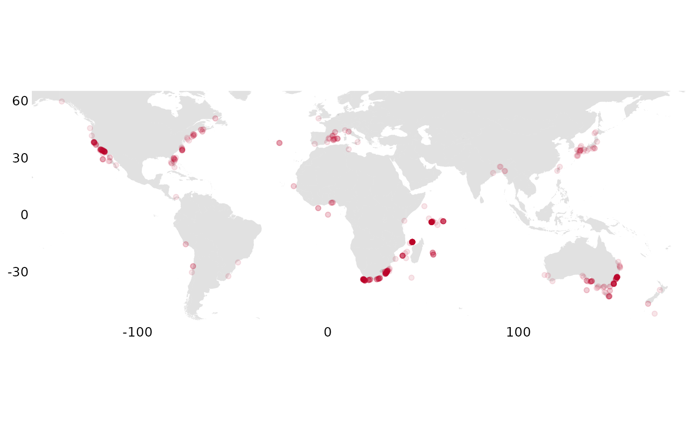
It looks ok, so we want to convert to a grid, “rasterizing” it, summarizing occurrencies across grid cells
r <- rasterize_occs(o)We now inspect this on a map:
# occs_ggmap_gridded_polys(r)
occs_ggmap_gridded(r, legend = FALSE)## S4 class 'SpatRaster' [package "terra"]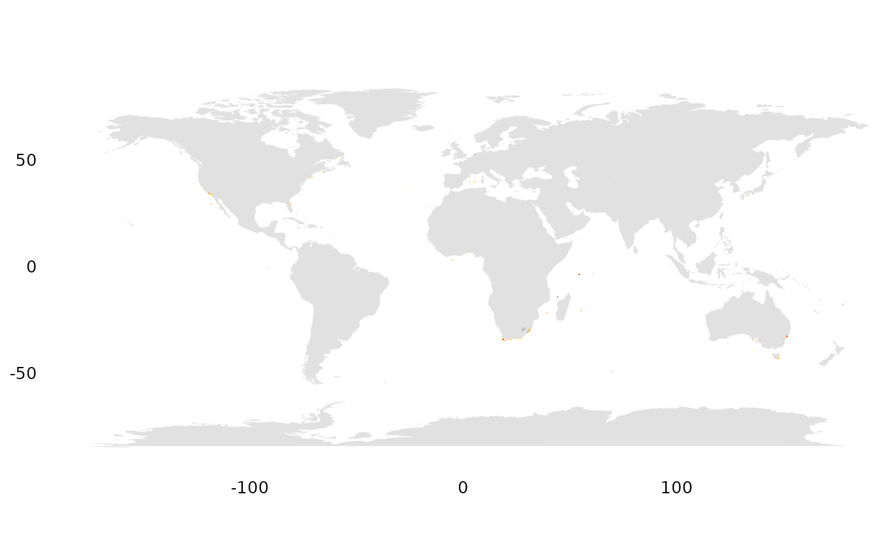
We immediately find that it is hard to see such small pixels (half degree cells)… and want to zoom in.
geocode <- function(geoname) {
geoname |>
geocode_nominatim() |>
dplyr::select(any_of(c("lat", "lon"))) |>
dplyr::mutate(across(everything(), as.double)) |>
dplyr::select(c("lon", "lat"))
}
# are there observations outside Cape Town?
p <- geocode("Cape Town")
occs_ggmap_gridded(r, center = p, padding = 15)## S4 class 'SpatRaster' [package "terra"]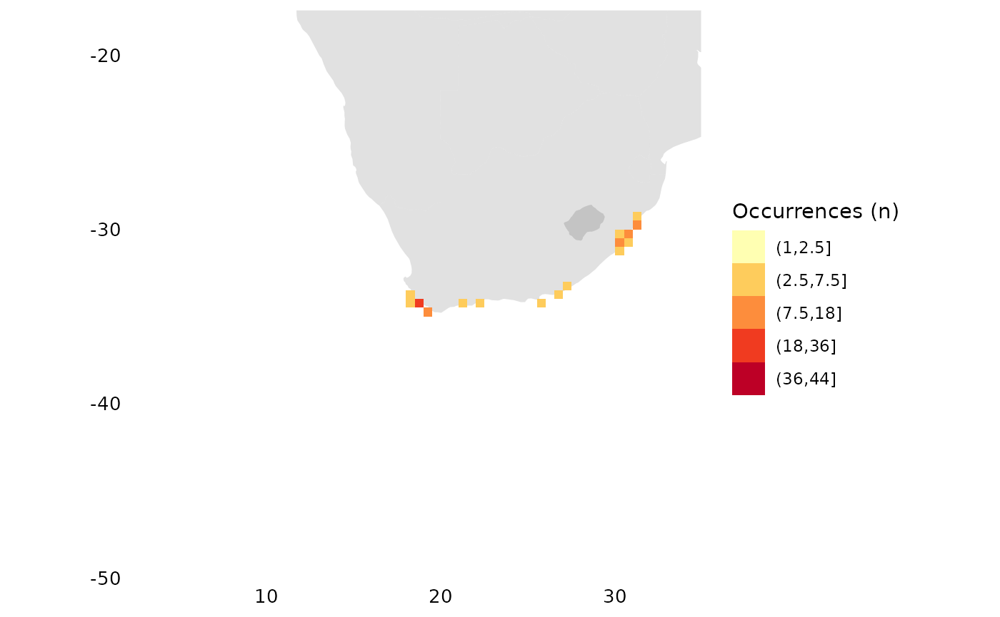
# what about outside SF?
p <- geocode("San Francisco")
occs_ggmap_gridded(r, center = p, padding = 20)## S4 class 'SpatRaster' [package "terra"]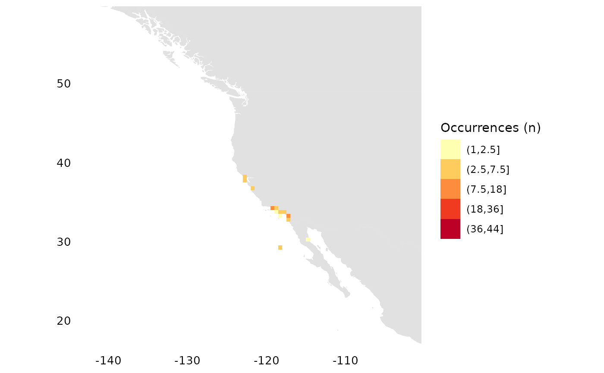
# around the Seychelles?
p <- geocode("Seychelles")
occs_ggmap_gridded(r, center = p, padding = 30)## S4 class 'SpatRaster' [package "terra"]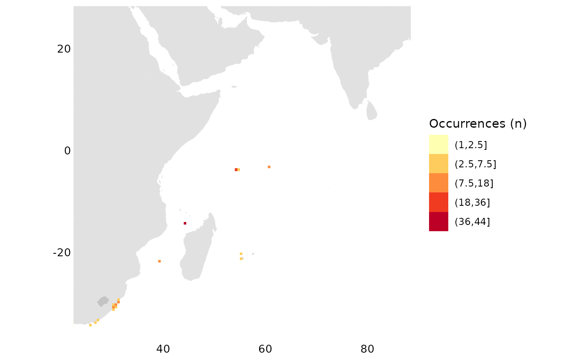
# Australian East-Coast?
p <- geocode("Surfer's Paradise, Australia")
occs_ggmap_gridded(r, center = p, padding = 10)## S4 class 'SpatRaster' [package "terra"]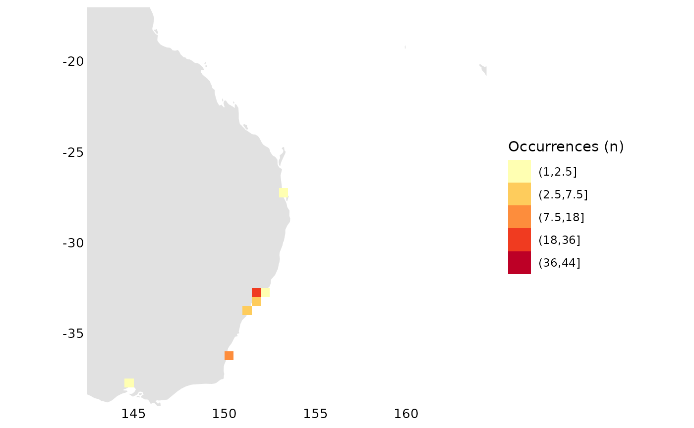
To really be able to zoom and check out details we use the web map instead, where we can zoom in on all the locations above
occs_webmap_gridded(terra::trim(r))The European Amphibian
Now lets look at point data from an European amphibian:
o <- get_data("rgbif_galemys_pyrenaicus")
occs_ggmap_points(o)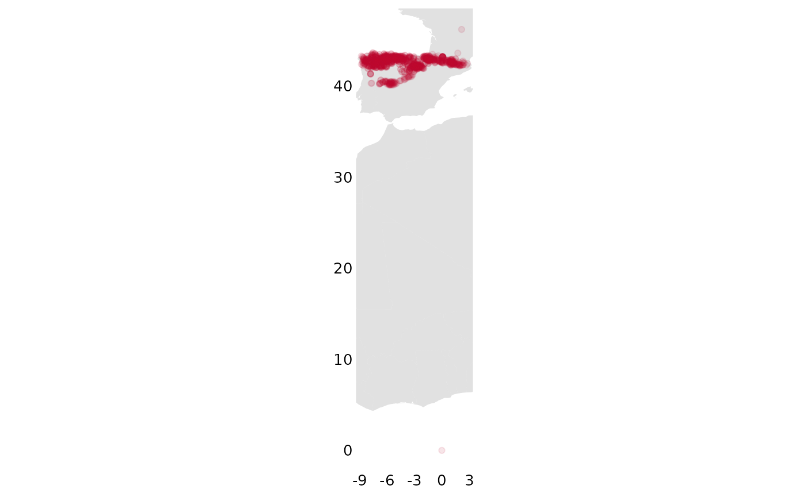
Here we check visually for outliers and note that this looks strange, it seems some point is included from way down in Africa:
ggplot2::ggplot(o, ggplot2::aes(x = decimalLatitude, y = decimalLongitude)) +
ggplot2::geom_point(alpha = 0.4) +
ggplot2::labs(x = "", y = "")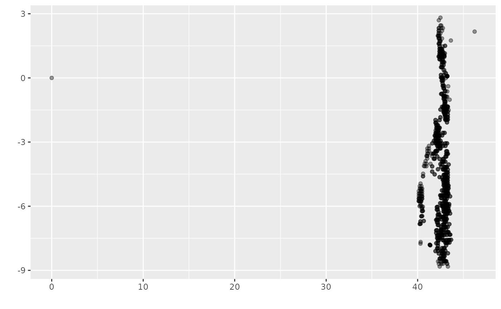
We proceed to remove outliers. In this case we remove 0, 0 (seems to be a data error?) and everything above lat > 45
o <- o %>%
filter((!is.na(decimalLatitude)), (!is.na(decimalLongitude))) %>%
filter(!(decimalLatitude == 0 & decimalLongitude == 0)) %>%
filter(decimalLatitude < 45)
# look at histograms for coordinates for a sanity check
hist(o$decimalLatitude)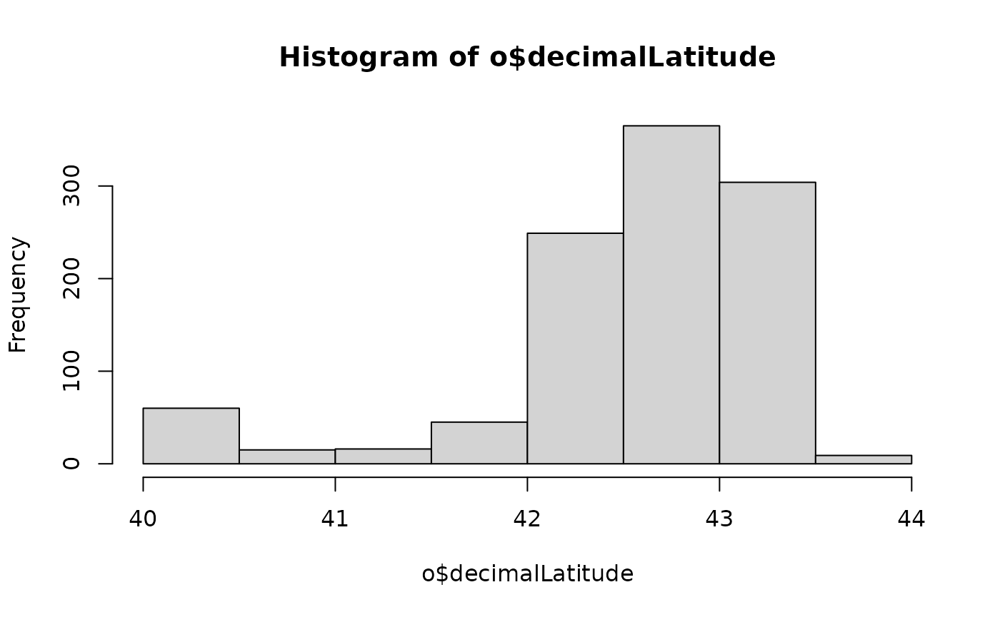
hist(o$decimalLongitude)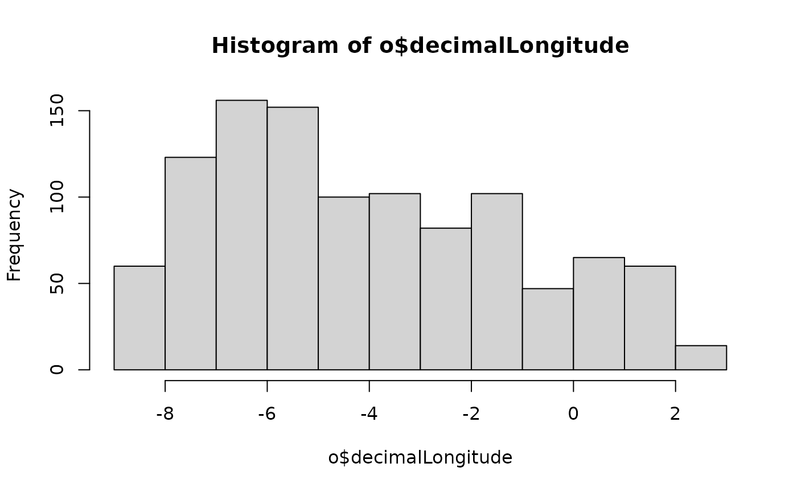
# compile the summary grid,
# trim the grid and map it
r <- rasterize_occs(o)
occs_ggmap_gridded(terra::trim(r), legend = FALSE)## S4 class 'SpatRaster' [package "terra"]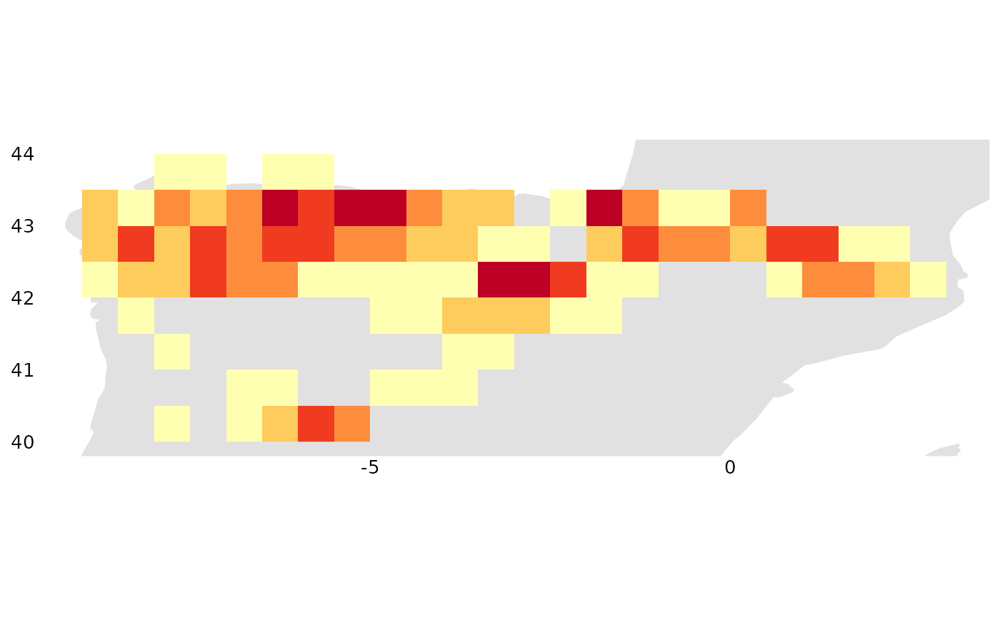
occs_ggmap_gridded(terra::trim(r), legend_title = "Galemys pyrenaicus (n)")## S4 class 'SpatRaster' [package "terra"]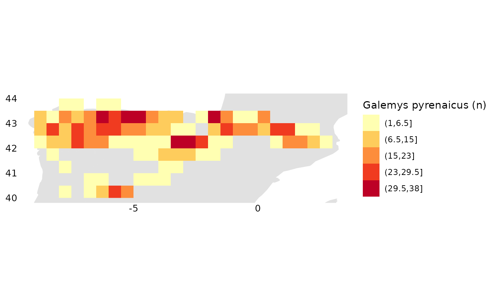
Here are a few ways to sanity check the raster data:
# look at frequencies of different values represented in the raster
terra::freq(r)## layer value count
## 1 1 1 3
## 2 1 2 18
## 3 1 3 3
## 4 1 4 8
## 5 1 5 3
## 6 1 6 5
## 7 1 7 2
## 8 1 8 3
## 9 1 9 1
## 10 1 10 3
## 11 1 12 5
## 12 1 13 2
## 13 1 14 1
## 14 1 16 3
## 15 1 17 1
## 16 1 18 5
## 17 1 19 2
## 18 1 20 3
## 19 1 21 1
## 20 1 25 3
## 21 1 26 3
## 22 1 27 1
## 23 1 28 3
## 24 1 29 1
## 25 1 30 2
## 26 1 31 2
## 27 1 34 1
## 28 1 38 1
# look at a histogram of values in the raster
hist(terra::values(r, mat = FALSE), xlab = "count", main = "")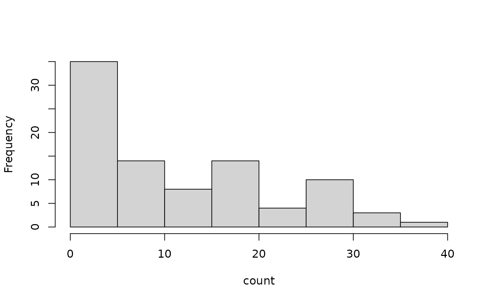
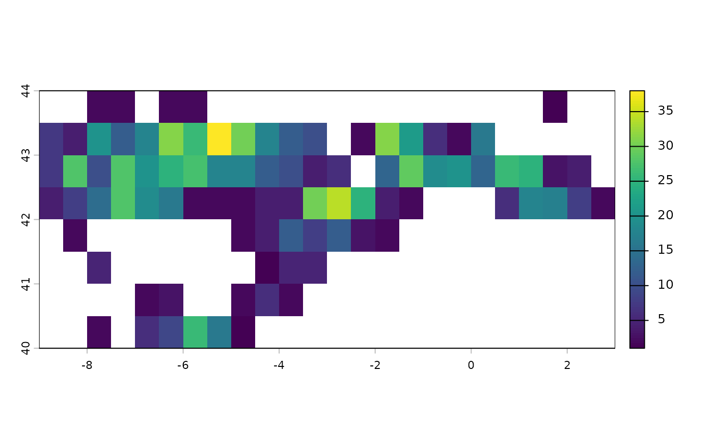
# spplot(trim(r))
# quantile(r, na.rm = TRUE)